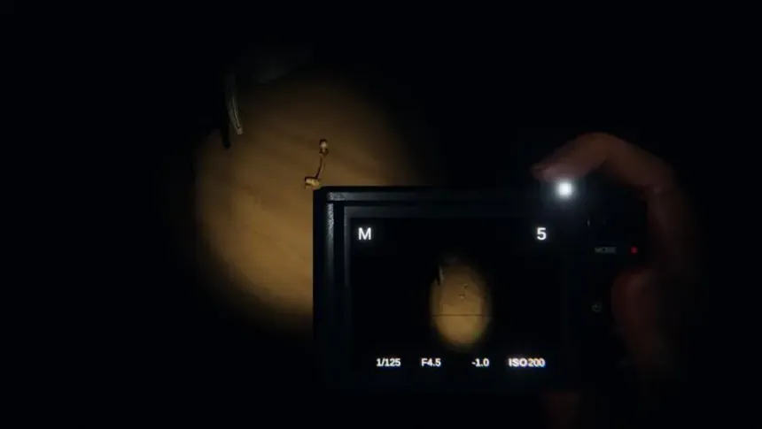
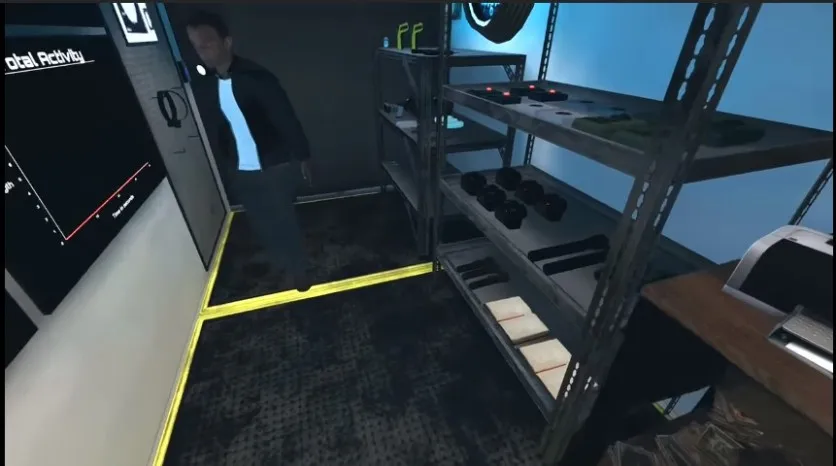
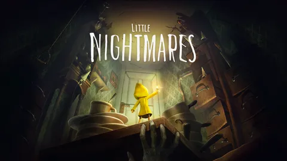
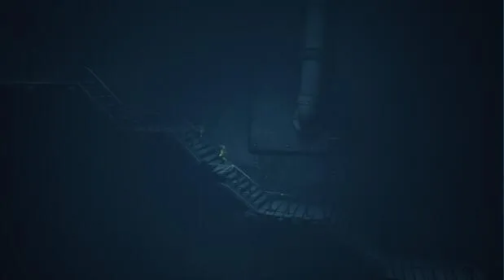
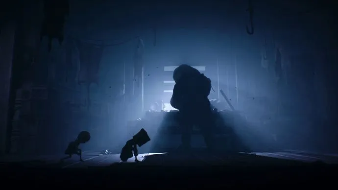

Phasmophobia est un jeu indépendant d'horreur et de survie qui est développé et publié par Kinetic Games. Il est sorti sur Steam en septembre 2020 et a vite bénéficié de la médiatisation de nombreux streamers Twitch et YouTubers bien connus, ce qui lui a permis de se faire connaitre très rapidement. Ainsi, le 15 octobre 2020, le jeu est le septième jeu le plus populaire sur Twitch et le jeu le plus vendu sur Steam dans le monde.
❮
❯



Little Nightmares est un jeu vidéo de plates-formes et de réflexion développé par Tarsier Studios et édité par Bandai Namco Entertainment, sorti en 2017 sur Windows, PlayStation 4, Xbox One et Nintendo Switch.
Le jeu consiste à suivre l'aventure de Six, une petite fille affamée, qui doit s'échapper d'un mystérieux navire dont les habitants sont monstrueux. Le jeu a reçu des critiques positives à sa sortie, les critiques louant l'atmosphère, les graphismes et le son, mais en critiquant le système de points de contrôle du jeu et sa courte durée.
❮
❯